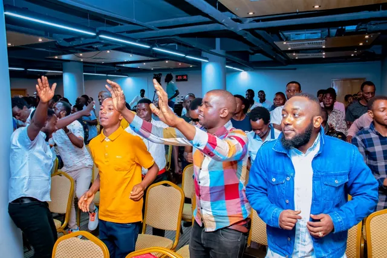

SundaySunday Service
8:00 PM — 11:00 PM
Evening gathering

APOSTLES CHURCH OF CHRIST · DUBAI
A place to belong. A faith to live. Find hope and grow in faith with our community in Dubai.

OUR CHURCH
Our mission is to preach the Gospel of Jesus to the nations and to heal the broken-hearted.
Meet our churchTHERE’S A PLACE FOR YOU HERE
Every week · Dubai time (GST / UTC+4)
8:00 PM — 11:00 PM
Evening gathering
8:00 PM — 11:00 PM
Evening gathering
3:00 AM — 6:00 AM
Early morning gathering

WELCOME TO OUR CHURCH
Many stories. One hope. A community growing together in Christ.
Honouring Jesus together.
Growing through God’s Word.
A place to belong.
Sharing hope and His love.
Our mission is to preach the Gospel of Jesus to the nations and to heal the broken-hearted. Through biblical teaching, worship and prayer, we share messages that strengthen faith and inspire lives.
The Lord is my shepherd; I shall not want.
Psalm 23:1
LIFE TOGETHER


TAKE YOUR NEXT STEP
Join a gathering, reach out for prayer,
or discover how to support the church.
Share a prayer request and connect with our church community.
Let’s pray together 02 / GENEROSITYAsk the church how you can support its ministry and message.
Explore giving 03 / COMMUNITYGet to know the church and plan a visit to our gathering in Dubai.
Come visit us